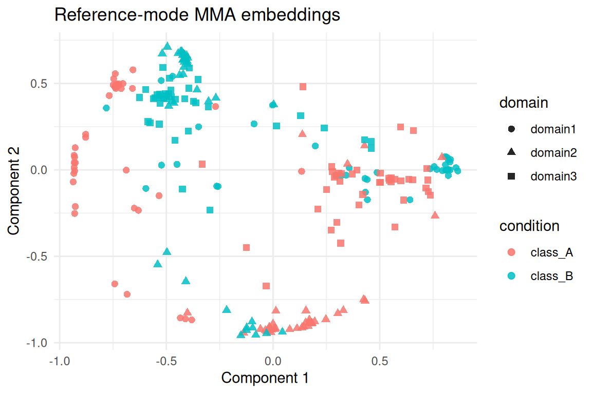
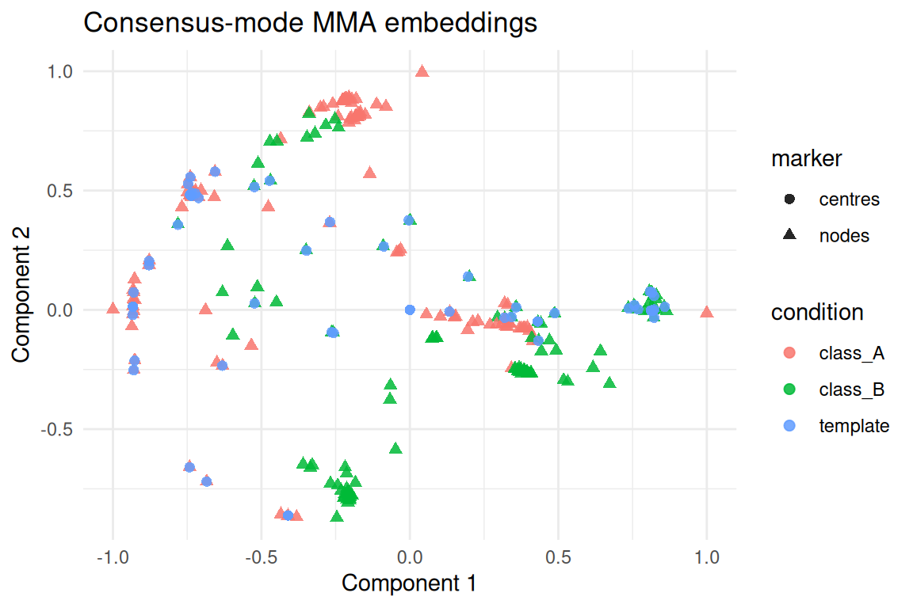

Overview
mma_align_multiple() aligns three or more domains by
combining heat-kernel spectral embeddings, eigensignature-based
eigenbasis registration, and an EM refinement step that supports both
reference matching and joint consensus templates. The function exposes
controls for histogram versus Wasserstein signatures, gating heuristics
for repeated eigenvalues, and final Hungarian assignments when hard
correspondences are needed.
This vignette follows the style of the other tutorials in the
package: we build a multiset from the shared
alignment_benchmark, run both reference and consensus
modes, and inspect diagnostics returned by
alignment_quality().
Preparing the Multiset Example
alignment_benchmark <- manifoldalign::alignment_benchmark
raw_domains <- alignment_benchmark$domains
multi_domains <- lapply(raw_domains, function(dom) {
multidesign::multidesign(dom$x, dom$design)
})
multi_names <- names(multi_domains)
node_counts <- vapply(multi_domains, function(dom) nrow(dom$x), integer(1))
hd_multi <- multidesign::hyperdesign(multi_domains)
tibble(
domain = multi_names,
nodes = node_counts,
features = vapply(multi_domains, function(dom) ncol(dom$x), integer(1))
)
#> # A tibble: 3 × 3
#> domain nodes features
#> <chr> <int> <int>
#> 1 domain1 80 4
#> 2 domain2 80 4
#> 3 domain3 80 4The latent classes shipped with the benchmark are used only for diagnostics.
table(multi_domains[[1]]$design$condition)
#>
#> class_A class_B
#> 40 40Reference Mode Alignment
We first align every domain to domain1 with
eigensignature gating, hypersphere normalisation, and a final Hungarian
pass to extract hard correspondences.
set.seed(1)
mma_ref <- mma_align_multiple(
hd_multi,
ref_idx = 1,
ncomp = 8,
sigma = 0.7,
embedding = "ctd",
normalize = "hypersphere",
match_to = "reference",
signature_method = "hybrid",
signature_gate_multiplicity = TRUE,
signature_retry_if_weak = TRUE,
final_assignment = "hungarian"
)
str(mma_ref, max.level = 1)
#> List of 15
#> $ v : num [1:12, 1:8] -44.57 -54.31 -42.32 -34.32 6.87 ...
#> $ s : num [1:240, 1:8] -0.736 -0.711 -0.936 -0.656 -0.74 ...
#> $ sdev : num [1:8] 0.515 0.511 0.245 0.337 0.305 ...
#> $ preproc : NULL
#> $ block_indices :List of 3
#> $ rotations :List of 3
#> $ posteriors :List of 3
#> $ hist_align :List of 3
#> $ signature_align:List of 3
#> $ ref_idx : num 1
#> $ embedding : chr "ctd"
#> $ normalize : chr "hypersphere"
#> $ K : int 8
#> $ assignment :List of 3
#> $ em_stats :List of 3
#> - attr(*, "class")= chr [1:2] "mma_align_multiple" "multiblock_biprojector"
quality_ref <- alignment_quality(mma_ref)
tibble::as_tibble(quality_ref$per_domain)
#> # A tibble: 3 × 9
#> domain n mse mse_soft matched coverage mean_confidence converged
#> <int> <int> <dbl> <dbl> <int> <dbl> <dbl> <lgl>
#> 1 1 80 NA NA NA NA NA TRUE
#> 2 2 80 0.265 0.0117 80 1 0.486 FALSE
#> 3 3 80 0.196 0.00270 80 1 0.517 FALSE
#> # ℹ 1 more variable: iterations <int>
tibble::as_tibble(quality_ref$global)
#> # A tibble: 1 × 6
#> mse_weighted mse_soft_weighted K ref_idx mean_confidence all_converged
#> <dbl> <dbl> <int> <dbl> <dbl> <lgl>
#> 1 0.230 0.00481 8 1 0.501 FALSEThe per-domain diagnostics expose EM convergence, average eigensignature confidence, and MSE under both hard and soft correspondences. We can relate the assignments back to the hidden labels of the benchmark.
ref_conditions <- multi_domains[[1]]$design$condition
class_accuracy <- vapply(seq_along(multi_names)[-1], function(idx) {
perm <- mma_ref$assignment[[idx]]
keep <- which(!is.na(perm))
if (!length(keep)) return(NA_real_)
mean(ref_conditions[perm[keep]] == multi_domains[[idx]]$design$condition[keep])
}, numeric(1))
coverage <- quality_ref$per_domain$coverage[-1]
accuracy_tbl <- tibble(
domain = multi_names[-1],
class_accuracy = class_accuracy,
hard_match_coverage = coverage
)
accuracy_tbl
#> # A tibble: 2 × 3
#> domain class_accuracy hard_match_coverage
#> <chr> <dbl> <dbl>
#> 1 domain2 0.225 1
#> 2 domain3 0.225 1The aligned embeddings combine all domains row-wise. Visual
inspection of the first two components highlights the shared latent
structure recovered by mma_align_multiple().
score_tbl <- as_tibble(as.matrix(mma_ref$s), .name_repair = "minimal")
colnames(score_tbl) <- paste0("comp", seq_len(ncol(score_tbl)))
score_tbl <- score_tbl %>%
mutate(
domain = rep(multi_names, times = node_counts),
condition = unname(unlist(lapply(multi_domains, function(dom) dom$design$condition)))
)
ggplot(score_tbl, aes(x = comp1, y = comp2, colour = condition, shape = domain)) +
geom_point(alpha = 0.85, size = 2) +
labs(title = "Reference-mode MMA embeddings", x = "Component 1", y = "Component 2") +
theme_minimal()
Consensus Template Mode
Consensus mode learns a shared orthogonal template while allowing
uneven domain sizes. We down-sample domain3 to 60 nodes to
illustrate the automatic choice of consensus centres (min
by default).
set.seed(42)
consensus_domains <- raw_domains
keep_idx <- sort(sample(seq_len(nrow(consensus_domains[[3]]$x)), 60))
consensus_domains[[3]]$x <- consensus_domains[[3]]$x[keep_idx, , drop = FALSE]
consensus_domains[[3]]$design <- consensus_domains[[3]]$design[keep_idx, ]
multi_consensus <- lapply(consensus_domains, function(dom) {
multidesign::multidesign(dom$x, dom$design)
})
consensus_names <- names(multi_consensus)
consensus_counts <- vapply(multi_consensus, function(dom) nrow(dom$x), integer(1))
hd_consensus <- multidesign::hyperdesign(multi_consensus)
tibble(
domain = consensus_names,
nodes = consensus_counts
)
#> # A tibble: 3 × 2
#> domain nodes
#> <chr> <int>
#> 1 domain1 80
#> 2 domain2 80
#> 3 domain3 60
set.seed(99)
mma_consensus <- mma_align_multiple(
hd_consensus,
ref_idx = 1,
ncomp = 8,
sigma = 0.7,
embedding = "ctd",
normalize = "hypersphere",
match_to = "consensus",
consensus_centers = "min",
consensus_init = "ref",
signature_method = "w2",
eig_penalty = 0.01,
signature_gate_multiplicity = TRUE,
final_assignment = "hungarian",
em_outlier = 0.05
)
list(
consensus_centers = nrow(mma_consensus$consensus),
em_iterations = mma_consensus$em_stats$iterations,
converged = mma_consensus$em_stats$converged
)
#> $consensus_centers
#> [1] 60
#>
#> $em_iterations
#> [1] 7
#>
#> $converged
#> [1] TRUE
quality_consensus <- alignment_quality(mma_consensus)
tibble::as_tibble(quality_consensus$per_domain)
#> # A tibble: 3 × 9
#> domain n mse mse_soft matched coverage mean_confidence converged
#> <int> <int> <dbl> <dbl> <int> <dbl> <dbl> <lgl>
#> 1 1 80 0.254 0.00000859 60 0.75 NA TRUE
#> 2 2 80 0.241 NA 60 0.75 0.995 TRUE
#> 3 3 60 0.259 NA 60 1 0.993 TRUE
#> # ℹ 1 more variable: iterations <int>
tibble::as_tibble(quality_consensus$global)
#> # A tibble: 1 × 6
#> mse_weighted mse_soft_weighted K ref_idx mean_confidence all_converged
#> <dbl> <dbl> <int> <dbl> <dbl> <lgl>
#> 1 0.251 0.00000312 8 1 0.994 TRUEThe consensus template captures the shared geometry in a compact
basis. Each domain’s embeddings sit close to the learned centres even
though domain3 has fewer nodes.
consensus_scores <- as_tibble(as.matrix(mma_consensus$s), .name_repair = "minimal")
colnames(consensus_scores) <- paste0("comp", seq_len(ncol(consensus_scores)))
consensus_scores <- consensus_scores %>%
mutate(
domain = rep(consensus_names, times = consensus_counts),
condition = unname(unlist(lapply(multi_consensus, function(dom) dom$design$condition)))
)
centers_tbl <- tibble(
comp1 = mma_consensus$consensus[, 1],
comp2 = mma_consensus$consensus[, 2],
domain = "consensus",
condition = factor("template")
)
plot_tbl <- bind_rows(
mutate(consensus_scores, marker = "nodes"),
mutate(centers_tbl, marker = "centres")
)
ggplot(plot_tbl, aes(x = comp1, y = comp2, colour = condition, shape = marker)) +
geom_point(alpha = 0.85, size = 2) +
labs(title = "Consensus-mode MMA embeddings", x = "Component 1", y = "Component 2") +
theme_minimal()
Consensus assignments point each domain back to indices of the
template. The coverage column in alignment_quality()
indicates how many nodes land on a unique centre; increasing
em_outlier or switching final_assignment to
"argmax" can trade precision for recall when outliers are
expected.
Summary
-
mma_align_multiple()unifies eigensignature alignment and EM refinement for both reference and consensus workflows. - Histogram/Wasserstein signatures with gating stabilise eigenbasis matching before the EM loop.
-
alignment_quality()reports convergence, coverage, and confidence diagnostics without relying on labels. - Consensus mode automatically adapts the template size when domains have different node counts.
- Hard assignments remain optional; the EM posteriors can drive downstream soft analyses when coverage is low.